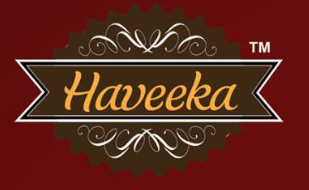

A collection of professional consulting engagements, cybersecurity tool integrations, academic forensic research, and community contributions.
Designed and integrated an automated Slack/CI-CD companion bot that interfaces with custom LLM prompts to analyze source code repositories during manual audits. It filters false positives, detects structural anti-patterns, and speeds up triage times by 4-8 hours per client engagement.
Led a technical team of 8 security assessors executing end-to-end vulnerability scans, penetration testing, and policy checks for an enterprise cloud provider client. Standardized level-of-effort estimation metrics and authored formal Statement of Work templates for audit handovers.
Partnered with a healthcare client's security architects to outline detailed data flows and model potential entry points. Designed threat matrices for microservices, identified critical network configuration flaws, and advised on policy adjustments to align with strict HIPAA regulations.
Designed a local virtual environment to simulate a denial-of-service (DoS) attack exploiting WordPress CVE 2014-9034. Developed security analysis report on mitigation techniques, focusing on server-side rate-limiting and PHP configuration hardening.
Conducted research on forensic methods to analyze containerized environments post-compromise. Focused on reconstructing container states, inspecting layer diffs, recovering deleted socket structures, and auditing docker daemon logs.
Designed structured reports analyzing ARP Poisoning simulations, network routing configuration weaknesses, and overall incident response parameters. Includes detailed analysis of privacy breach case studies.
Computer-vision application for Windows OS using C++ and OpenCV. Featured custom algorithms for real-time edge detection, contour extraction, and finger count detection to execute presentation triggers (e.g. MS PowerPoint slides).

Developed and launched the web commerce platform for Haveeka, a small-scale Maharashtrian food product entrepreneurship. Manage ongoing SEO optimization, domain configuration, security patching, and digital marketing strategies.
Delivered an introductory webinar in May 2020 for undergraduate IT students. Discussed basic threat categories (SQLi, XSS, CSRF), the OWASP Top 10 framework, secure cookie flags, and modern defense strategies.